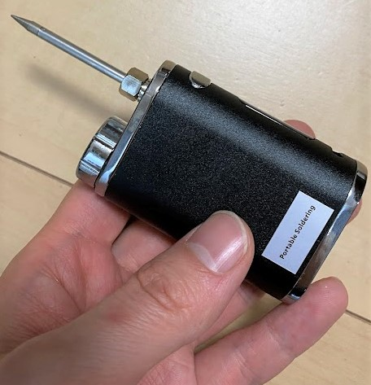
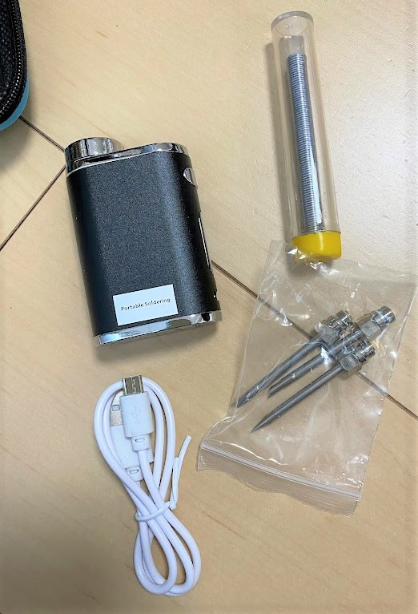
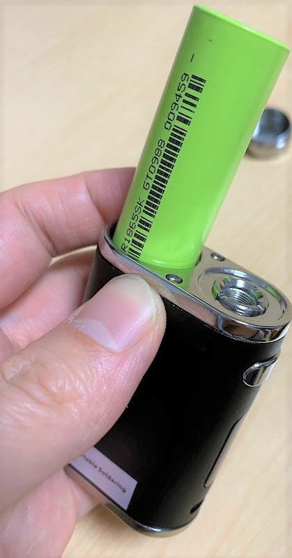
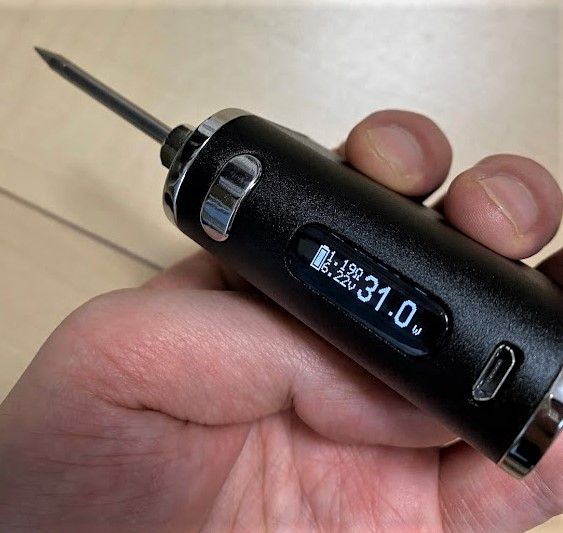
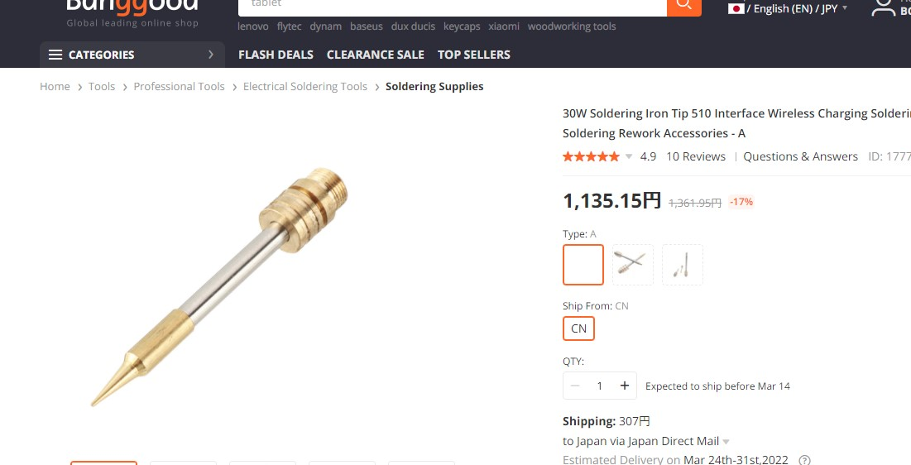

どこでもはんだ付けできるワイヤレスバッテリーはんだごて
この記事はBanggoodの提供でお届けします。
以前紹介したようにこのブログはBanggoodと提携させていただいており、今回紹介するワイヤレスバッテリーはんだごても、Banggoodからいただいたものとなります。（ワイヤレスバッテリーはんだごてのレビューがしたい！と言ったのは自分なので、Banggoodが無理やりこの商品を押しているわけではなく、inajobの一押しアイテム！、という感じです。）
「ワイヤレスバッテリーはんだごて」とは
はんだごて、というと普通は、コンセントが付いた優先のものが一般的です。
しかし、移動できない機械の修理や、大きなガジェットなどに対してはんだごてを使う際、ケーブルが邪魔になる事があります。
そんな時に役立つのがこの ワイヤレスバッテリーはんだごてです。
USBケーブルで充電ができ、内蔵のバッテリーに貯めた電力によりワイヤレスで動作します。

バッテリー容量は2600mAhです。
小手先も3種類も同梱されています。

全ての付属物を入れることが出来るいい感じのケースも付いています。

不思議な形をしていますが、ねじの部分を回しとると中には18650型のバッテリーが入っていました。

使い方
電源を入れるためには、スイッチを2秒以内に5回素早く押します。ちょっと不思議な動作ですが、誤って電源が入らないためにはこのくらいの操作が良いのかもしれません。
電源ボタンを長押しすることではんだごてが過熱され、離すと動作が停止します。
ハンダゴテをが適温に加熱するためにはある程度の時間電源ボタンを押す必要がありますが、10秒以上押し続けると電源が切れてしまいます。7～8秒押し続ける事を何度か繰り返して必要な温度まで加熱させます。

手元で試したところ30Wに設定したうえで7秒の過熱を3回ほど行うとはんだがとけるくらいの温度になりました。
+,-ボタンによりどの程度の電力を与えるかを調節することができます（マニュアルによると15-30Wがおすすめのようです）
まとめ
はんだ付けする間にこまめに電源ボタンを押して、加熱する必要があるので普通のはんだごてより面倒な感じでした。
しかし、モバイルではんだ付けするという目的においては、誤って電源が入ってしまわないこの設計は理にかなっているように感じました。
普通のはんだごてを持っている方で、電源コードが邪魔でうまくはんだ付けができないという課題をお持ちの方はポータブル用として買ってみるのも良いと思いました。
自分はこれで3Dプリンタのリミットスイッチのハンダが浮いていたのを直しました。
追記: じつはこれ、電子タバコのモジュールだった？
昨日記事を公開したところ、何人かの方から、「電子タバコ」と酷似している。 と教えていただきました。
pico！？picoじゃないか！？ https://t.co/ZPmBr8148l
— もち村💛ONAJ (@motchy2k) March 8, 2022
なるほ・・・ど？
— 朝槻 彩羽 a.k.a. 楓 (@kaede_asatsuki) March 8, 2022
Vape民には本体がどう見ても入門用の某テクニカルMODにしか見えない😇 https://t.co/ntWWRkdRBG
Vape じゃん… https://t.co/mFqfZiO7gq
— シメイ (@chimay_rovering) March 8, 2022
例えばこれ
そしてついに、Banggoodで小手先だけ販売しているのを発見しました。

このネジの部分は 510と呼ばれる規格のようで、これに準拠している電子タバコであれば、この小手先をつけることではんだごてとして利用できるかもしれません。
そういえば車のシガーソケットって電源として重宝されたりしていましたが、この電子タバコの充電モジュールも似たようなものだと、とらえることもできますね。
ちょっと面白い発見の報告でした。 家に該当する電子タバコをお持ちの方は小手先だけ買ってみるのはいかがですか？


関連記事